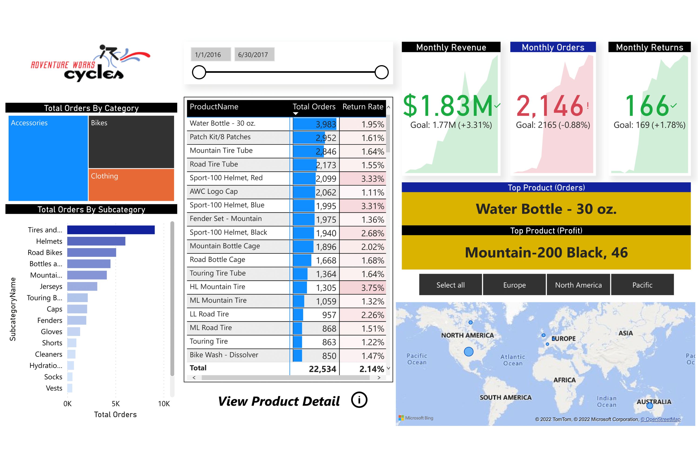

POWER BI PROJECTS BREAK DOWN
These dashboards have been developed purely for desktop version view.
They are not mobile friendly. The interactive dasboards below might load
faster, slower or not depending on the speed of your internet.
All interactive dashboards below have been tested and function well.
Incase of load failure, please refresh your browser.
-1. Tripple J Telecom -
THE SITUATION:
Tripple J Telecom is losing customers at a very high rate to competitors.
As a Business Data Analyst Consultant, You've been hired to help the company
improve retention by identifying high value customers and churn risks
DATA CLEANING TOOL USED:
Microsoft Power BI Desktop, Python, Excel
- 2. Covid-19 In Cameroon 2021 -
THE SITUATION:
You have been hired by Critical Disease Control and given a dataset
showing the covid-19 situation in Cameroon for the year 2021.
THE BRIEF:
Your supervisor needs a way to track
KPIs (Deaths by Region, Recoveries by Region, Postive cases, Target Population To Be Vaccinated)
DATA CLEANING TOOL USED:
Microsoft Power BI Desktop
DATASET SOURCE
- 3. Unicorn Companies Around the Globe -
THE SITUATION:
You have been hired as Senior Business Data Analyst by Forbes Magazine.
You are to use the provided dataset to discover insights related to Unicorn Companies.
THE BRIEF:
Your task is to illustrate the current landscape of unicorn companies around the globe.
KPIs(Number of Companies, Total Valuation and Funding, Valuation by Company)
DATA CLEANING TOOL USED:
Microsoft Power BI Desktop and Ms Excel
- 4. Maven Airline Passenger Satisfaction -
THE SITUATION:
For the first time, Maven Airlines has experienced a 50% drop in customers.
You have been hired as a Senior Buisness Data Analyst to investigate
the causes and provide recommendations.
You are to clean it, design and deliver an
end-to-end business intelligence solution from scratch!
DATA CLEANING TOOL USED:
Excel & Power BI
- 5. Adventure Works -
CAUTION
This dashboard is not interactive.
THE SITUATION:
You have been hired by Adventure Works Cycles, a global manufacturing
company
to design and deliver
an end-to-end business intelligence solution from scratch!
THE BRIEF:
Your client needs a way to track
KPIs(Sales, Revenue, Profit, Returns), compare regional
performance, analyze
product-level trends and forecasts and indentify high-value customers.
